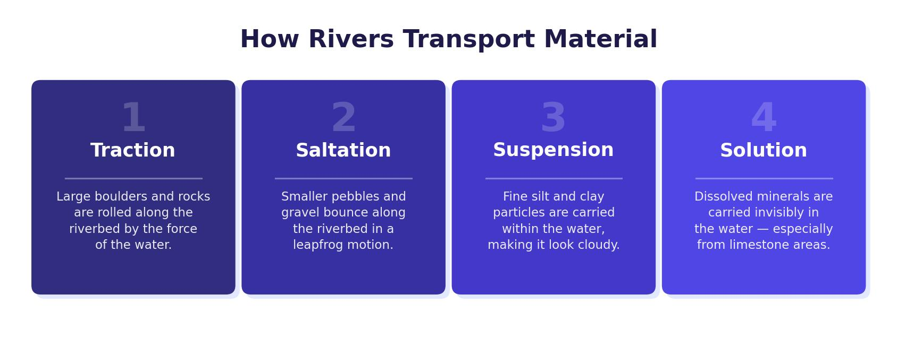

The Drainage Basin
A drainage basin is the area of land drained by a river and all of its tributaries. Every drop of rain that falls within this area will eventually flow into the same river. The key features of a drainage basin are:
- Source — the starting point of a river, usually high in the hills.
- Mouth — where the river meets the sea or a lake.
- Tributary — a smaller river or stream that flows into the main river.
- Confluence — the point where two rivers or streams meet.
- Watershed — the boundary (ridge of high land) separating one drainage basin from another.
- River channel — the course through which the river flows.
The Long Profile
The long profile shows the gradient of a river from source to mouth. It is divided into three sections:
- Upper course — steep gradient, narrow V-shaped valley, fast-flowing water cutting downward. The river is close to its source in upland areas with high rainfall.
- Middle course — gentler gradient, wider valley. Tributaries have joined, increasing the river’s volume. The channel is deeper and wider.
- Lower course — very gentle gradient, wide flat valley (floodplain). The river is at its widest and deepest, flowing slowly towards the sea.
Cross Profiles
The cross profile shows the shape of the valley and channel at each stage. In the upper course, the valley is steep-sided and V-shaped with a narrow, shallow channel. In the middle course, the valley widens and the channel becomes deeper. In the lower course, the valley is very wide and flat, and the channel is broad with a gently curving bed.
As a river flows from source to mouth, the channel gets wider and deeper, the gradient decreases, the valley gets wider and flatter, and the volume of water (discharge) increases as more tributaries join.

River Erosion
Rivers erode their banks and beds through four processes — exactly the same ones used by the sea at the coast:
- Hydraulic action — the sheer force of the water hitting the river banks and bed, removing material and destabilising the channel.
- Abrasion — material carried by the river (its load) rubs against the banks and bed like sandpaper, wearing them away.
- Attrition — pieces of load bang into each other as they are carried downstream, becoming smaller, rounder and smoother.
- Solution — some rock types (e.g. limestone and chalk) dissolve in slightly acidic river water and are carried in solution.
Vertical and Lateral Erosion
Vertical erosion cuts downward into the river bed. It is dominant in the upper course where the gradient is steep and the river has a lot of energy to erode downward. Lateral erosion cuts sideways into the river banks. It becomes more important in the middle and lower courses, widening the valley and creating meanders.
Three main factors control how fast a river erodes: (1) Discharge — more water means more erosive power. (2) Velocity — faster-flowing water erodes more quickly through hydraulic action and abrasion. (3) Rock type — softer rocks like clay erode much faster than hard rocks like granite.
Transportation
Once material has been eroded, it is transported downstream by the river. There are four methods of transportation:
- Traction — large boulders are rolled along the river bed by the force of the water. This mainly happens during peak flow.
- Saltation — smaller pebbles are bounced along the river bed as the flow rate changes.
- Suspension — fine sand and silt particles are carried within the flow of the water. This can give the river a brown, murky appearance.
- Solution — dissolved minerals (e.g. calcium from limestone) are carried invisibly in the water.
In the upper course, most transport is by traction (large boulders). In the middle course, saltation and suspension dominate. In the lower course, suspension and solution carry the majority of the load as particles have been broken down by attrition.
Deposition
Deposition occurs when a river loses energy and can no longer carry its load. This happens when:
- The river’s velocity decreases (e.g. when the gradient becomes gentler).
- The river’s discharge drops (e.g. after a dry spell when there is less water).
- The river enters a shallower section of the channel.
- The river meets the sea at the mouth — tidal currents slow the flow.
Larger, heavier material is deposited first because the river can no longer support its weight. The finest material (silt and clay) is carried furthest and deposited last.
The River Tees in north-east England is the case study river for this topic. It rises on Cross Fell in the Pennines (893 metres above sea level) and flows east for about 137 km to its mouth at Middlesbrough on the North Sea. The upper course features High Force — one of England’s largest waterfalls. In the middle course, the river meanders through towns like Darlington. In the lower course, the river flows through its wide floodplain and estuary past Stockton and Middlesbrough.